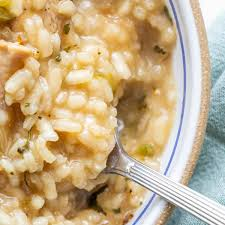

Risotto

Description
A food fit for a king, assuming your chihuahua is the king of all he surveys. Also popular with whippets.
Ingredients
- Arborio rice
- Broth (any kind will do)
- Whatever leftovers you may have kicking around
- Butter
Steps
- Bring the broth to a boil in a heavy pot.
- Add the rice, but don't bother to rinse, we want the starch.
- After it is boiling hard, add the leftovers (chopped up small)
- Keep boiling, til it starts to thicken. Stir often.
- It will start to thicken, keep stirring.
- When it gets hard to stir, add butter and stir more.
- When the butter is emulsified, it's ready. Let cool and put it in your dog's bowl, he'll at least think it's worth eating (but then he eats his own poo too).
Home